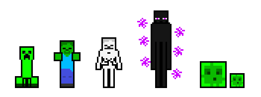

Моби З мобів гравці можуть добувати різні унікальні ресурси (які випадають (дропаються) після смерті моба). Моби поділяються на 5 видів: дружні, ворожі, нейтральні, домашні та створювані. На відміну від більшості ігор, де моби незалежні від гравця, тут всі моби існують лише в певному радіусі від його персонажа (в мережевій грі від усіх гравців), тому, якщо гравець відійде від ворожого чи нейтрального моба занадто далеко, той зникне (якщо він не у закритому об'єкті). Це зроблено для поліпшення продуктивності гри — процесор не навантажується непотрібними гравцям обчисленнями. На деякій відстані від персонажа періодично випадково генеруються (спавняться) нові моби. Ворожі моби (зомбі, скелети, кріпери, павуки) та нейтральні (мандрівники Краю тощо) генеруються в малоосвітлених або неосвітлених місцях. Дружні моби (свині, корови, курки тощо) генеруються залежно від біома та зазвичай одноразово.
